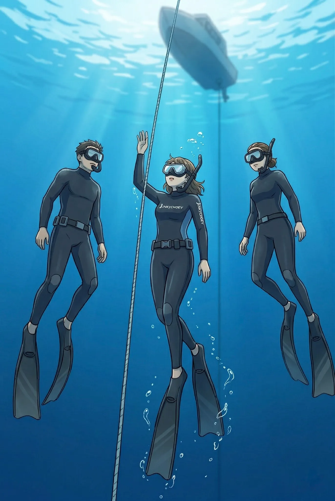
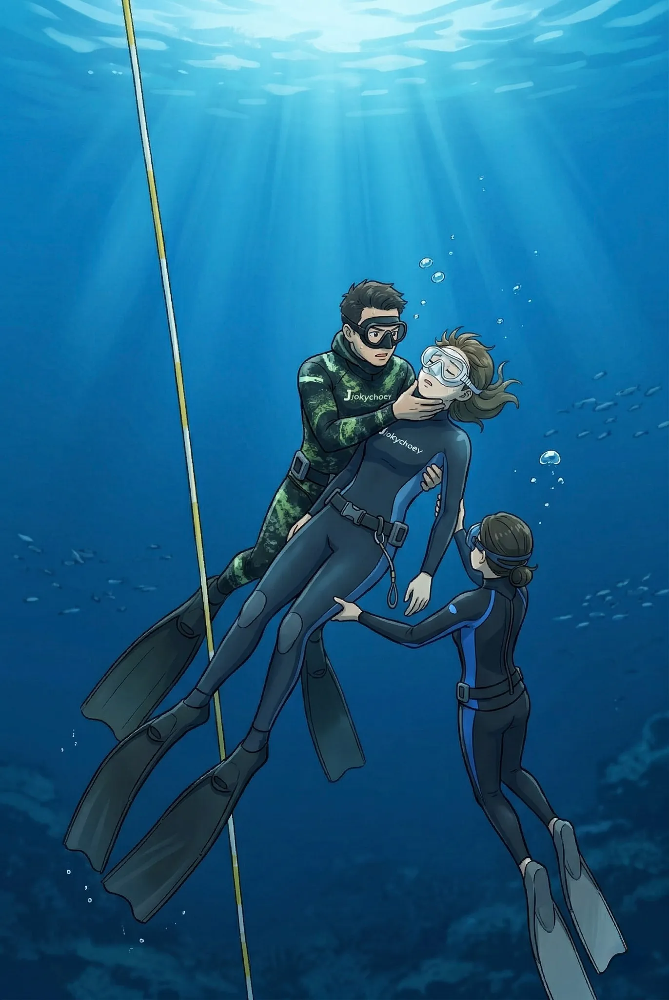
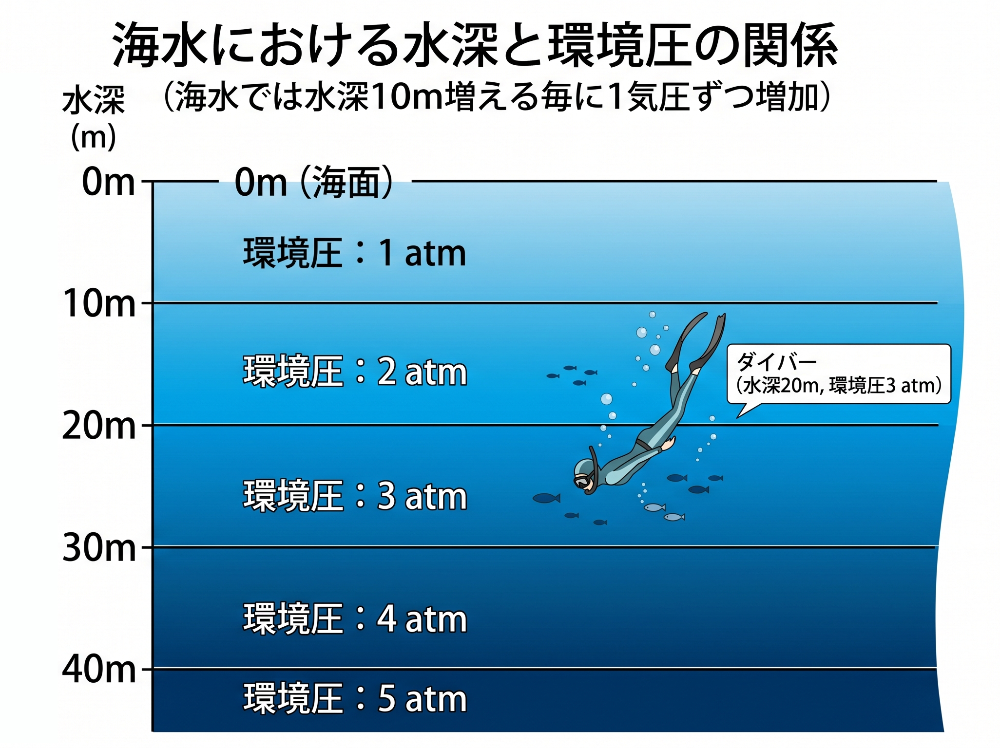
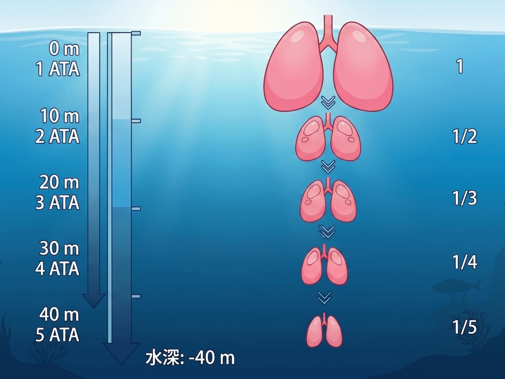
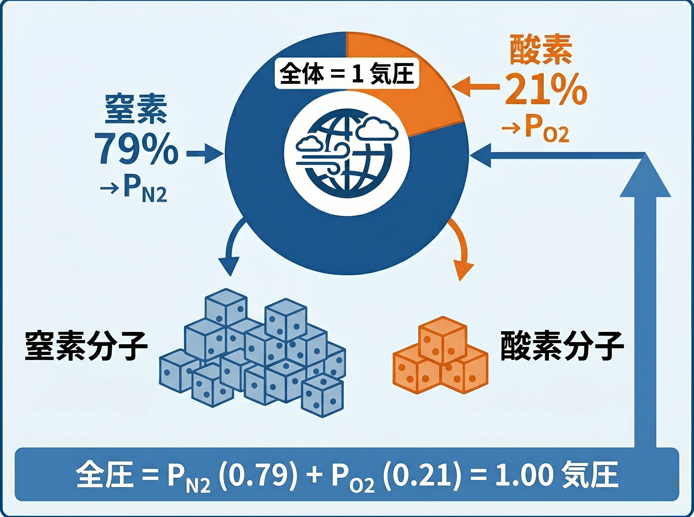
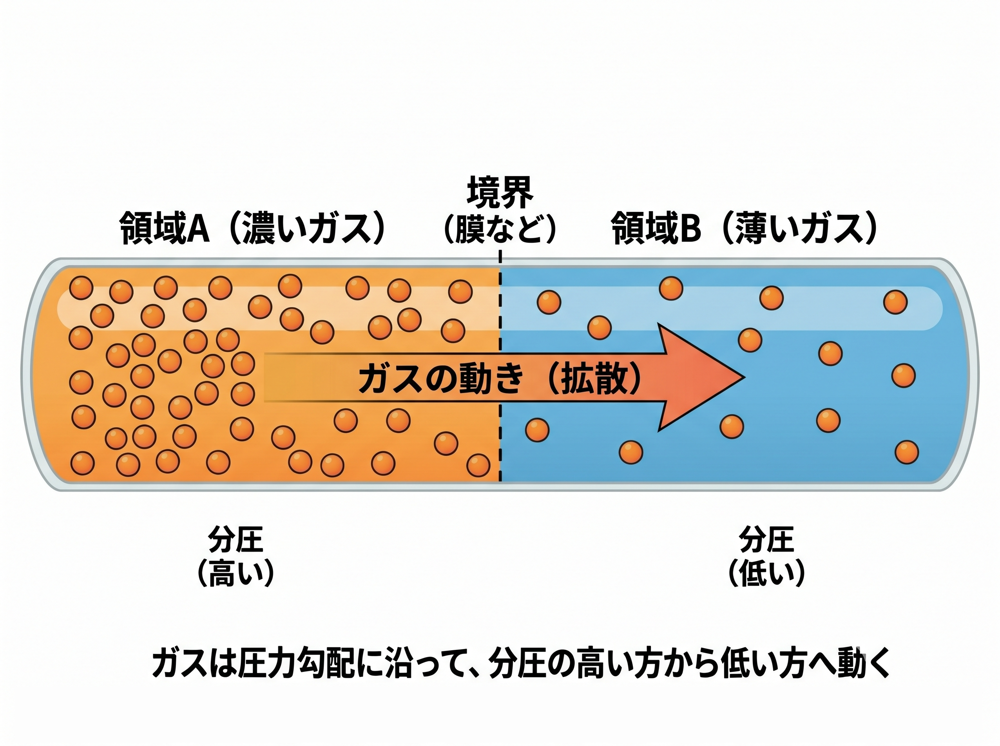
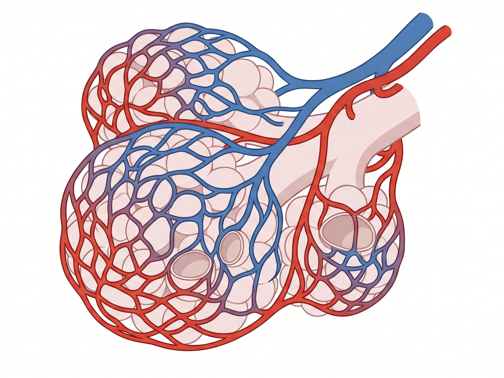
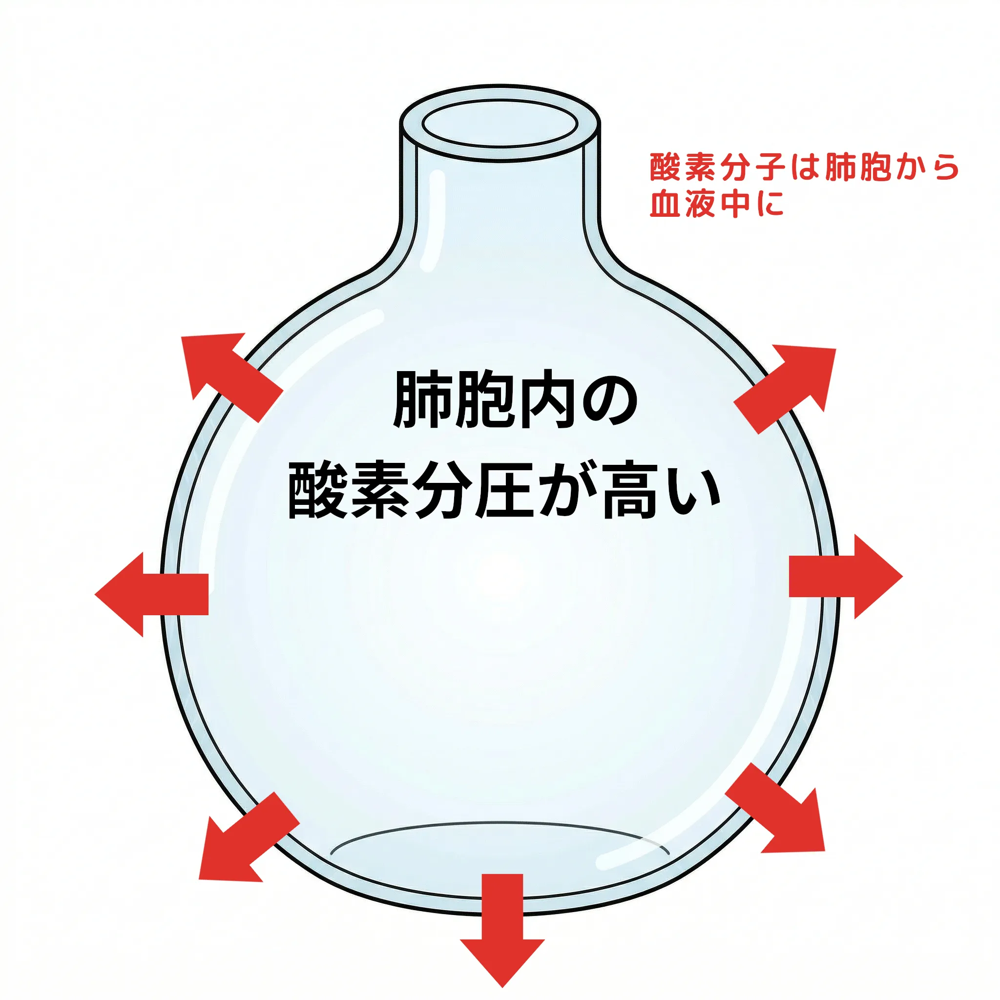
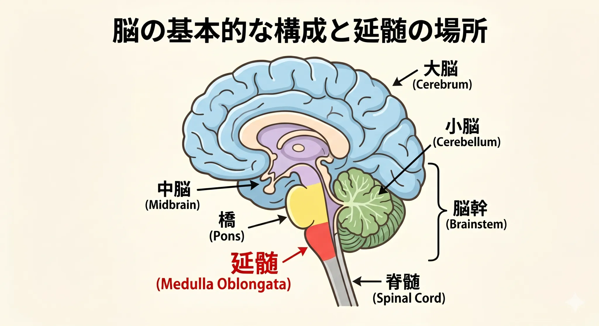
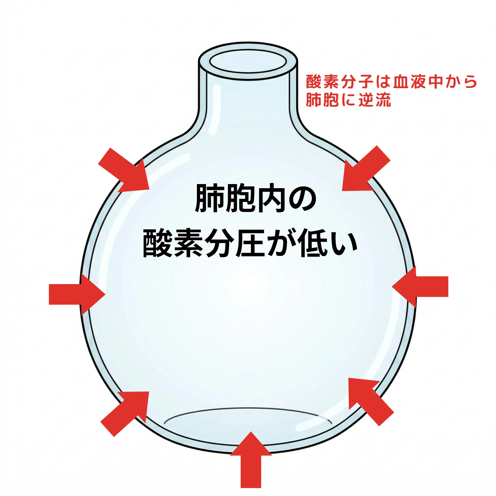

シャローウォーターブラックアウトの怖さについての復習
1. はじめに
最近スキンダイビング、マーメイドスイムなどが流行っているようです。なかにはフリーダイビングなどの競技志向の方もいらっしゃいます。これらは息こらえ潜水と呼ばれたり、閉息潜水と呼ばれることもあります。ここではレジャーとしてのスキンダイビングを取り扱うことにします。

さてスキンダイビングは水面で息を吸い、息を止めて水中に潜ります。そして、しばらく水中で過ごして、苦しくなる前に図のように水面に浮上します。そして通常のスキンダイビングではそれを何度も繰り返しながら水中世界を楽しみます。
スクーバダイビングと違って通常は重機材と呼ばれる BCD やレギュレーターを使ったり、そしてもちろんタンクを背負って潜るということがありません。ただし BCD やスキンダイビングジャケットは非常時に浮力を確保するために使うことが強く勧められています。
以下のような装備を身に着けてスキンダイビングを楽しむのが一般的です。
- マスク
- スノーケル
- フィン
- ブーツ
- ウェットスーツ
- ウェイトベルト
- BCD またはスキンダイビングジャケット
スキンダイビングはスクーバダイビングのように空気などの呼吸ガスが詰め込まれたタンクを持たずに行うダイビングです。ですからスキンダイビングの潜水時間は息をこらえることができる時間に制限を受けます。
スキンダイビングはスクーバダイビングと違って重い機材を背負いませんし、使う機材の種類もスクーバダイビングとくらべて少なくなります。なのでスクーバダイビングより手軽なアクティビティとして行われることも少なくありません。
ですがスクーバダイビングのように呼吸源を持たずに水中に潜っていきますから、やはり決して小さくはない安全上のリスクを抱えることになります。
2. 怖いシャローウォーターブラックアウト
このスキンダイビングですけれど息を止めて行うダイビング特有の、これだけは絶対に避けないといけないというトラブルがあります。
それがシャローウォーターブラックアウトです。

シャローウォーターブラックアウトとは何かといいますと、無理な息こらえをしすぎることで、浮上中に水面付近でいきなり意識を消失してしまうことを言います。
ベテランスキンダイバーのスキンダイビング中の事故の多くは、このシャローウォーターブラックアウトが原因とも言われています。
シャローウォーターブラックアウトでは、息苦しさを感じることもなく、スッといきなり意識が遠のいて失神します。水中での失神ですからとても危険です。
スキンダイビングもバディシステムを守って複数人数で行うように言われているのは、そういった失神による溺水、死亡事故を防ぐためです。
シャローウォーターブラックアウトを起こすと、バディなどのセフティダイバーがいないと、助かる方法がありません。ですから決して１人でトレーニングすらしてはいけないと言われているわけです。
このシャローウォーターブラックアウトですがフリーダイビングのような 100m も潜るようなダイビングは別として、普通はシャローウォーターの名が示すように水面近くの浅い水深で起こります。
予防方法はシンプルです。
- 無理な息こらえをしない
- 苦しさを感じるより前に浮上する
- ハイパーベンチレーションなどの脳のバグを利用した息こらえ時間を伸ばす方法は使わない
- パッキングなどのフリーダイビング選手が息こらえ時間を伸ばすために使う技術を安易に利用して息こらえ時間を伸ばさない
- バディシステムを守る
- レスキュー技術を身につける
3. シャローウォーターブラックアウトがおきるメカニズム
3 章ではなぜこのようなシャローウォーターブラックアウトのような危険なことが起きてしまうのか、その体内のメカニズムを説明していきます。この章を読むことでシャローウォーターブラックアウトがなぜこれほどに危険なのか、そしてなぜ水面近くでおきるのかがわかります。
3.1 シャローウォーターブラックアウトの仕組みを知る前に
最初に人が何によって命を保っているのか、ごく当たり前のことを説明します。
次にシャローウォーターブラックアウトのメカニズムを理解するために必要な、水に潜ることに関係する物理法則、呼吸という生理現象に関係する物理法則について説明します。
次に肺でのガス交換の仕組みと、なぜ人が息こらえをしていると苦しく感じるのか、などを説明します。
最後にシャローウォーターブラックアウトが起きるときに体内で起きている物理現象について説明します。
3.2 人間は空気を吸って空気に含まれる酸素を消費して命を保っている
あまりにも当たり前のことですが、人間は空気を吸って空気中の酸素を消費して命を保っています。つまり人が生きている以上、酸素は体内で消費されます。この当たり前のことがとても重要です。
スキンダイビングのような息こらえ潜水ではスクーバダイビングのように、水中で体の外から空気が供給されることがありません。ですから体内の酸素が足りなくなれば、体中の臓器、組織は徐々に機能を停止します。
脳という臓器も例外ではありません。しかもこの脳という臓器が人間の臓器の中でもっとも酸素を必要とします。
脳は酸素を蓄えておく能力がほとんどなく、数分間酸素供給が止まるだけでも重大な障害を受けます。
3.3 ダイバーと物理法則
3.3.1 海水では水深 10m ごとに周囲の圧力が 1 気圧増える

海水中では水深が 10m 深くなるたびに、ダイバーを取り巻く周囲の圧力が 1 気圧ずつ増えていきます。
3.3.2 気体を風船などに閉じ込めて沈めていくと、1 気圧毎に体積が半分になっていく (ボイルの法則)

スキンダイビングの場合、息を止めて海に潜ります。
そうしますとわたしたちをとりまく周囲の圧力は増えていきます。すると周囲の圧力と肺の中の空気の圧力が均等になるように物理法則に従って肺は縮んでいきます。
前の項で、海に潜ると環境圧が 10m 毎に 1 気圧増えていくということを説明しました。そうしますと単純計算で肺は周囲の圧力が増えることで水深 -10m では半分の大きさにまで小さくなってしまう計算になります。そのとき -10m での周囲の圧力と、肺の中の空気の圧力が同じ圧力になります。
3.3.3 空気は約 21% の酸素と約 79% の窒素が含まれ、それぞれの分圧は地上では 0.21 気圧、0.79 気圧である。

分圧とは、複数の気体が混ざっているとき、それぞれの気体がどれだけの圧力を持っているかを示します。
ここではあまり難しいことは考えずに、大気圧中での窒素の分圧は 0.79 気圧だということと酸素の分圧は 0.21 気圧であると覚えておいてください。
分圧という言葉はダイビングを学ぶ上で頻繁にでてきますので、理解しておいてください。
とくに人の呼吸などのガス交換を理解する上で決して忘れてはいけない概念です。
3.3.4 ガス分子は分圧の高い方から低い方へ移動する

分子が通るようなとても薄い膜などにさえぎられた空気に含まれる酸素などの分子は、高い分圧の場所から低い分圧の場所に移動します。
移動することで同じ分圧になろうとします。同じ分圧になったときを平衡状態と呼び、そのとき分子の移動は終わります。
これが呼吸などのガス交換の基本的な物理原理となります。
3.4 人間の呼吸の仕組み
人間は呼吸をすることで生きています。人間は空気に含まれる酸素を体内に取り込んでその酸素を使います。そして酸素を使った後に生み出される二酸化炭素を呼吸を通して体外に排出します。
ここでは人間の呼吸の仕組みとなぜ呼吸を止めると苦しくなるのかを簡単に説明します。
3.4.1 呼吸の仕組み
人が息を吸うとき、横隔膜と肋間筋が動くことで肺の内容積を増やします。すると外部の空気圧より肺内の圧力が低くなるので、外部の空気が鼻腔や口腔、そして気道、気管、気管支を通って最終的に肺胞にまで流れ込んできます。

肺胞は図のように毛細血管に囲まれています。
この肺胞と毛細血管の間で酸素や二酸化炭素、そしてダイバーにはおなじみの過剰な窒素のガス交換が行われます。

酸素は人の様々な臓器で消費されますので、通常、体内、つまり肺胞を取り巻く毛細血管内の酸素分圧は、新しく肺胞に入っていた空気の酸素分圧より低くなります。
つまり
となります。
このとき、肺胞内酸素分圧の方が静脈血酸素分圧より高いのですから、「3.3.4 ガス分子は分圧の高い方から低い方へ移動する」で説明した仕組みにしたがって、酸素分子は静脈血に拡散していき、赤血球のヘモグロビンと結びつきます。
こうやって静脈血に取り込まれた酸素は、血液中の赤血球に乗って様々な臓器や組織へと運ばれていきます。そして運ばれた酸素は、運ばれた先で消費されていきます。
これが外呼吸と呼ばれるものです。
3.4.2 なぜ人は息が苦しくなるのか
オープンウォータの学科の復習です。
人は何によって息苦しさを感じるようにできているのでしたでしょうか。
はい。その通りで人は酸素分圧ではなく、主に二酸化炭素分圧により息苦しさを感じるのでした。

人が主に二酸化炭素分圧の増加を感知するのは、脊髄、頸動脈のある部位、心臓のすぐ上にある大動脈弓と呼ばれるところにセンサーがあります。
これらのセンサーが二酸化炭素の増加を検知すると、脳から呼吸中枢に呼吸せよという命令が送られます。
これら３箇所のセンサーのうち頸動脈、大動脈弓のセンサーは酸素分圧にも反応します。
スキンダイバーの中には、浅い水深よりも深い場所の方が息苦しさが和らいだように感じる人がいます。これは頸動脈、大動脈弓のセンサーに反応することにより引き起こされているのではないかと言われています。
スキンダイバーが潜水すると、周囲の圧力は水深とともに増えていきます。それにつれて肺はぎゅぅっと縮められていきます。そうすることで肺の中の空気の圧力と周囲の圧力を同じにしようとするのでした（ボイルの法則）。すると体内の酸素の総量は変わらないものの酸素分圧は増えますので若干ですが息苦しさが緩和されることになります
ただし、これは酸素分圧が高くなっただけであり、体内の酸素の総量が増えたわけではありません。酸素は潜水中も消費され続けています。
3.5 シャローウォーターブラックアウトはなぜ起きる？
シャローウォーターブラックアウトは体内の酸素欠乏によって脳が機能を維持することができなくなることで起こります。ですから体内の酸素が欠乏する前に浮上して、呼吸を再開さえすればシャローウォーターブラックアウトにはなりません。
3.5.1浮上時の圧力変化と特に水面近くで起きること
「3.3.2 気体を風船などに閉じ込めて沈めていくと、1 気圧毎に体積が半分になっていく (ボイルの法則)」の項で、水深が増えると肺の大きさは縮んでいくことをことをお話しました。
浮上することで何が起こるのでしょうか。
そうですね。周囲の圧力が減っていきますから肺は元のサイズに戻っていきます。そして肺の中の空気の圧力も周囲の圧力が減るのと同様に減っていきます。
そして肺の中の空気の圧力が減っていくのですから、肺胞の中の酸素分圧も減っていきます。これがシャローウォーターブラックアウトを理解するキモです。
3.5.2 体内から出ていこうとする酸素

前項でスキンダイバーが浮上するとともに肺の中の空気圧が減少していくことを述べました。これは浮上するとともに肺胞の中の酸素分圧が減っていくことを意味します。
すると自分の限界を越えた息こらえを水中で行っていると、以下のようなタイミングが発生することがあります。
この酸素分圧の逆転現象は、体内での酸素の消費と水面に浮上していくにつれて、肺胞内の酸素分圧が低下することであるタイミングで発生します。
静脈血酸素分圧よりも肺胞内酸素分圧が低くなってしまったとき、静脈血から肺胞へ酸素が移動しやすくなり、血液全体の酸素状態が急速に悪化してしまいます。
つまり水面が近づくほど、体内のあらゆる臓器、組織内の僅かに残った酸素もどんどんと肺胞の中に排出されていき、臓器や組織の機能させるだけの酸素がそれらのなかで足りなくなっていきます。
人間の脳は特に酸素不足に弱い臓器なので、このような酸素の流れの逆転現象が発生すると、一気に機能を喪失して意識を失うブラックアウトに至ります。
そしてこれこそがシャローウォーターブラックアウトが発生する仕組みです。
特に水深 10m から水面までの区間では周囲圧が 2 気圧から 1 気圧へ半減するため、肺胞内酸素分圧も急激に低下します。このためブラックアウトは水面直前で発生しやすくなります。
3.5.3 酸素分圧の低下が臨界点を超えたとき
体内の、特に脳の酸素分圧が 0.12〜0.10 bar まで低下するとブラックアウトが発生すると言われています。
酸素分圧低下による身体への影響
以下は一般的な目安であり、個人差や状況によって変化します。
- 0.21 bar（通常の状態）:
- 地上（海抜 0m）の空気中における酸素分圧です。
- 0.16 bar（低酸素症の始まり）:
- 脈拍や呼吸数の増加、集中力の低下、細かい作業のミスなどが現れ始めます。
- 0.12 bar（深刻な影響）:
- 判断力の著しい低下、筋力の減退、めまい、頭痛などが生じます。
- 0.10 bar∼0.12 bar（意識喪失の臨界点）:
- 多くの人がこの範囲で意識を失います。いわゆる「ブラックアウト」の状態です。
- 0.06 bar 以下（致命的）:
- 短時間で呼吸停止、心停止に至り、死亡する危険性が極めて高い状態です。ですけれどもスキンダイビングでは通常脳が呼吸再開を強く命令してきますので、低酸素を直接の理由にしてこの状態に移行することはあまりありません。通常は水中で意識を喪失した状態で呼吸を再開することにより溺水します。溺水の結果、低酸素状態になることで命を失う可能性が高まります。
4. シャローウォーターブラックアウトの予防
シャローウォーターブラックアウトは即命に関わるトラブルなので、なんとしても防止しなければなりません。この項ではシャローウォーターブラックアウトを防ぐ方法をまとめます。
4.1 「まだ苦しくない」は安全のサインではない
シャローウォーターブラックアウトで特に危険なのは、「まだ息が苦しくないから大丈夫」と感じている状態でも、実際には脳へ送られる酸素が限界に近づいていることがある点です。
前項で説明したように、人間は主に二酸化炭素分圧の上昇によって息苦しさを感じます。つまり息苦しさという感覚は、「酸素が十分に残っている」という保証にはなりません。
特に水深がある場所では周囲圧の影響で酸素分圧が高くなります。そのため潜水中は苦しさが和らいだように感じることがあります。
ですが実際には体内の酸素は消費され続けています。そして浮上を始めると肺胞内酸素分圧が急激に低下し、特に水面近くで一気にブラックアウトに至ることがあります。
「まだ平気」は安全のサインではありません。むしろ危険な領域に入り込んでいる可能性があります。
4.2 無理な息こらえをしない
スキンダイビングでは「苦しくなる前に浮上する」が基本です。
限界ぎりぎりまで潜る行為は、競技として厳密な監視体制の下で行われるフリーダイビングとは異なり、レジャーとしてのスキンダイビングでは非常に危険です。
特に以下のような行為は危険性を高めます。
- あと少しだけ我慢する
- 前回より長く潜ろうとする
- 深さや距離の自己記録を更新しようとする
- 他人と潜水時間を競う
- 動画撮影や魚の観察に夢中になる
- 疲れているのに繰り返し潜る
スキンダイビングでは「余裕を持って浮上する」ことが最も重要です。
4.3 ハイパーベンチレーションをしない
ハイパーベンチレーションとは、潜水前に意図的に激しく呼吸を繰り返すことです。
昔は「息をたくさん吸い込めば長く潜れる」と誤解されていました。しかし実際には、ハイパーベンチレーションで大きく酸素が増えるのではなく、主に二酸化炭素が減るだけです。
人間は主に二酸化炭素分圧の上昇によって息苦しさを感じます。つまりハイパーベンチレーションを行うと、身体からの「もう浮上しろ」という警告が遅れてしまいます。
その結果、本人はまだ余裕があるつもりでも、実際には酸素不足が進行していて突然ブラックアウトする危険があります。
特に若く体力がある人ほど、「まだいける」と無理をしてしまい事故につながることがあります。
潜水前は落ち着いて普通の呼吸を行い、リラックスした状態で潜るようにしてください。
4.4 パッキングなど競技的テクニックを安易に使わない
フリーダイビング競技では、肺に通常以上の空気を送り込む「パッキング」と呼ばれる技術が使われることがあります。
しかしこれらは専門的な知識、厳密な安全管理、サポート体制を前提として行われるものです。
レジャーとしてのスキンダイビングで安易に真似をすることは非常に危険です。
SNS や動画サイトでは長時間潜水の映像が目立つことがあります。しかし映像に映っていない場所で複数のセーフティダイバーが監視していたり、競技用の安全体制が組まれていることも少なくありません。
見た目だけを真似しないことが重要です。
4.5 バディシステムを守る
シャローウォーターブラックアウトは、自分では対処できません。
意識を失った瞬間、自力で浮上したり助けを呼んだりすることができなくなるためです。
そのためスキンダイビングでは必ずバディシステムを守る必要があります。
- 1 人が潜る間、もう 1 人は水面で監視する
- 同時に潜らない
- 浮上時には必要に応じて迎えに行き、最後まで監視する
- 水面に戻って呼吸が安定するまで確認する
特にシャローウォーターブラックアウトは水面直下で起こることが多いため、「もう浮上してきたから大丈夫」と目を離すのは危険です。
4.6 疲労・寒さ・体調不良を軽視しない
疲労、睡眠不足、飲酒後、寒さ、脱水などはすべて低酸素への耐性を低下させます。
また繰り返し潜水を続けることで二酸化炭素の蓄積や疲労が進み、判断力が低下することもあります。
「今日はなんとなくしんどい」「息が続かない」と感じる日は無理をしないでください。
海での事故では、ほんの少しの無理や油断が致命的な結果につながることがあります。
5. シャローウォーターブラックアウトがバディに起きたとき
もしバディがシャローウォーターブラックアウトを起こした場合、迅速な対応が必要になります。
ただし最も重要なのは、助けようとした側まで事故に巻き込まれないことです。
5.1 シャローウォーターブラックアウトの兆候
シャローウォーターブラックアウトでは完全に意識を失う前に、以下のような異常が見られることがあります。
- 浮上速度がおかしい
- フィンキックが止まる
- 視線が合わない
- 身体が脱力する
- 口元から泡が漏れる
- 水面で反応しない
- 痙攣のような動きをする
「少し様子がおかしい」程度でも、すぐにサポートする必要があります。
5.2 まず気道を水面上に出す
ブラックアウトしたダイバーを見つけたら、まず顔を水面上に保持します。
可能であれば後ろから支え、気道が水没しないようにします。
ウェイトを装着している場合は、必要に応じて速やかにリリースします。
ただし自分まで沈まないように注意してください。
5.3 呼びかけと呼吸の確認
顔を水面上に保持したら、反応があるか確認します。
- 肩を軽く叩く
- 名前を呼ぶ
- 「呼吸して！」「起きて！」「目を醒まして！」などと声をかける
軽度の低酸素症状であれば反応が戻ることがあります。
5.4 呼吸がない場合
呼吸がない、あるいは明らかに異常な場合は、ただちに陸上またはボートへ搬送し、救助を要請し、受講したレスキュー講習の手順に従って対応してください。
スキンダイビングやフリーダイビングでは、低酸素による呼吸停止が主な問題となるため、人工呼吸が重要になります。
ただし実際の救助手順は、正式なレスキュー講習で必ず訓練を受けてください。
5.5 「少し休めば大丈夫」と考えない
ブラックアウト後に意識が戻ったとしても安心してはいけません。
水を吸い込んでいる可能性がありますし、肺水腫などを起こすこともあります。
また本人が「大丈夫」と言っても、低酸素の影響で正常な判断ができていないことがあります。
ブラックアウトが起きた場合は、その日の潜水を中止し、必要に応じて医療機関を受診してください。
5.6 一人で潜らない
シャローウォーターブラックアウトが起きた場合、自分自身で対処することはできません。
そのため単独潜水では、意識を失った時点で生存できる可能性が極めて低くなります。
練習であっても、一人で息こらえ潜水を行わないでください。
5.7 もっとも重要なのは「起こさないこと」
シャローウォーターブラックアウトは、発生してから対処するより、発生させないことが何より重要です。
無理な息こらえをしないこと。バディシステムを守ること。危険なテクニックを安易に真似しないこと。そして決して１人で潜らないこと。
それらの基本を守ることが、最も確実な安全対策になります。